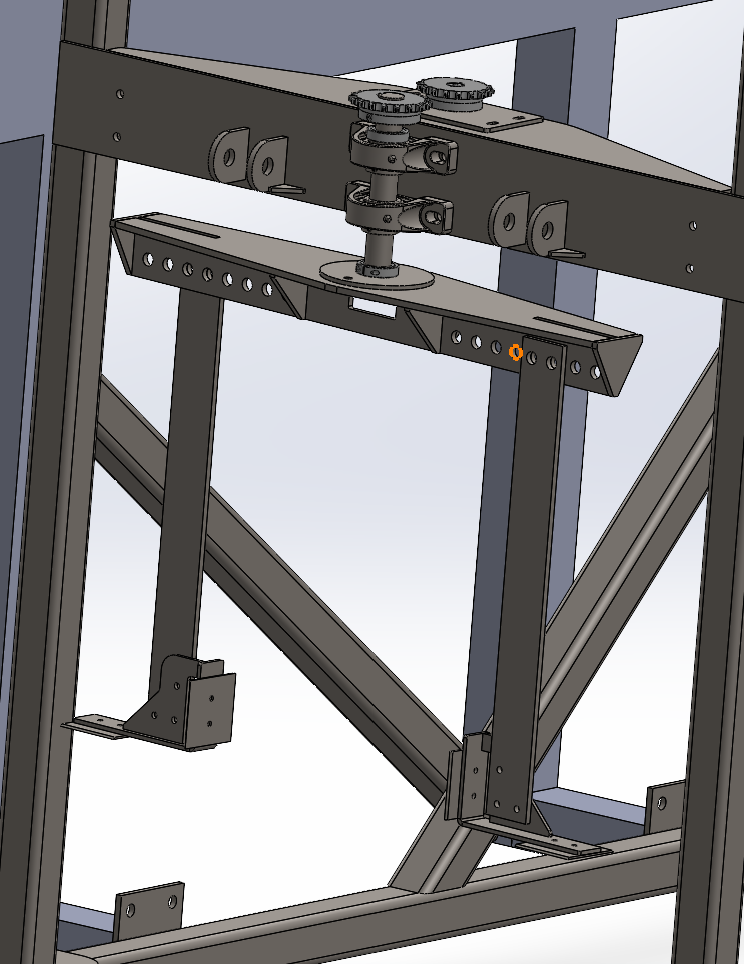

Agave Harvester Senior Project

Project Overview
This ongoing senior project adapts an existing grape harvester for agave harvesting. The goal is to remove approximately 80% of the agave leaves and uproot the agave.
My Role
Senior Project Manager, six-person team
My responsibilities include project management, design, fabrication planning, team coordination, and reviewing the project report.
Design
The first cutting-head design used a 3/8-inch steel plate, which bent during testing. The next design will use a reinforced structure made from approximately 3 × 3-inch or 4 × 4-inch square tubing before the team conducts another test.

Manufacturing & Fabrication
The team fabricated and tested an initial cutting head, then used the bent plate as feedback for the reinforced design. Fabrication planning now focuses on building a stronger blade structure for the next iteration.
Testing & Troubleshooting
During the initial cutting test, the steel plate bent while attempting to cut leaves. The team will test the reinforced structure and use the results to guide the next iteration. Troubleshooting and repeated testing are important because the older platform has unexpected mechanical issues.
Final Result
The project is ongoing. The next step is to test the reinforced cutting-head structure and use the results to improve the current concept or return to concept development.
What I Learned
This project is developing my leadership, SolidWorks, problem-solving, testing, and troubleshooting skills. The early test reinforced the importance of learning from failure, strengthening a design based on observed results, and continuing to validate ideas through repeated testing.